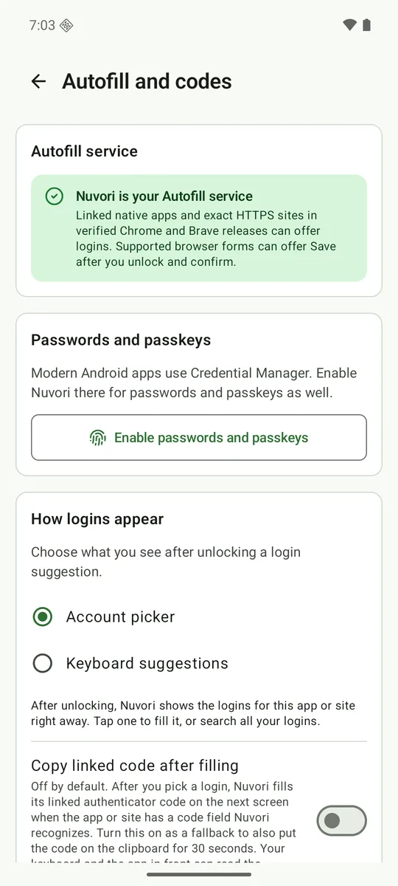
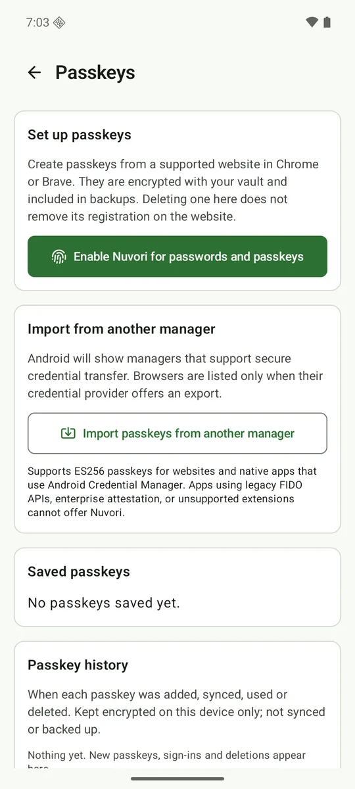

- Nuvori
- Android
Android autofill and passkeys, from your own vault
Nuvori for Android fills logins in apps and browsers, saves and uses passkeys on Android 14 or newer, and shows your codes on a Wear OS watch. Your vault stays encrypted on your phone, with no Nuvori account.
- Android 10 or newer
- Passkeys on Android 14+
- Wear OS 3+
- Free
Turn on autofill
- In Nuvori, open Settings > Autofill and codes.
- If it says Nuvori is not your Autofill service, tap Choose Nuvori autofill and select Nuvori.
- On Android 14 or newer, also tap Enable passwords and passkeys and turn on Nuvori.
- For Chrome or Brave, tap Open browser autofill settings. Turn on autofill using another service, then restart the browser.

Where Nuvori fills
- In apps: the logins you saved for that app.
- On websites: only the logins for the exact HTTPS site, in 13 verified browsers:
- Chrome
- Brave
- Edge
- Firefox
- Firefox Focus
- Firefox Klar
- Samsung Internet
- Vivaldi
- Opera
- Opera Mini
- DuckDuckGo
- Naver Whale
- Yandex Browser
In another browser, Nuvori can't verify which site is open, so it doesn't suggest logins by site. You can still pick a login and fill it after you confirm.
Popup or keyboard
In Settings > Autofill and codes > How logins appear, choose Account picker (the default) or Keyboard suggestions. Codes and new passwords always use the picker.
When autofill can't help
Add the Quick copy tile to Quick Settings. It copies a password, code, card detail or security answer, even if another app is your autofill service.
Passkeys on Android
On Android 14 or newer, Nuvori creates and uses passkeys in apps and websites. Passkeys are encrypted in your vault, sync to your other devices, and are included in backups.
- Open Settings > Passkeys and tap Enable Nuvori for passwords and passkeys.
- Create a passkey on a supported website in Chrome or Brave, or in an app that uses Android Credential Manager, and choose Nuvori.
- To sign in on a computer with a passkey from your phone, choose the computer's option to use a phone. Scan the QR code, tap Unlock Nuvori and pick the passkey.
Settings > Passkeys also lists your saved passkeys, a passkey history, and the recent apps and sites that asked for one. A passkey's private key is never shown. To move passkeys from another manager, tap Import passkeys from another manager.

Codes on your Wear OS watch
With Wear OS 3 or newer and the phone app, your watch shows your authenticator codes in your accent color. It keeps working offline after setup. Install it on the watch from the same Google Play listing.
Your phone and your PC
Pair the phone with Nuvori for Windows once, on the same Wi-Fi. Changes then go straight between your devices, or through a hidden folder in your own Google Drive when you are apart. Each change is encrypted and signed before it leaves the device. A login you save in Zen on your PC is ready to fill on your phone.
Get Nuvori for Android
Nuvori for Android and Wear OS are in closed testing on Google Play. The Google Play link opens for invited testers. Fill in the short form to be added as a tester.